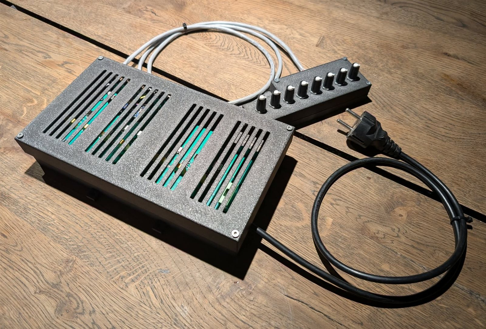

Household appliances · Power electronics · PCB design
Retro AC Valve Floor Heater
An 8-channel floor heating controller for homes that already have 230 V AC valves. It drives the existing valves directly, so nothing in the floor has to be replaced.

How it works
The controller is built from two boards. The main board sits in the vented box and has an Arduino Nano Every, eight triac outputs for the valves and a 230 VAC output for the circulation pump. Each output is fused, and the triac gates are opto-isolated from the microcontroller. The control panel is connected by a 2 m cable and has one knob per zone, a button and an LED. You turn a knob to set how much heat that room gets.
How the knob setting is turned into valve control (e.g. how long each valve is open) is still to be written.
- Supply
- 230 VAC, single phase
- Channels
- 8 × AC valve outputs + pump
- Load
- 20–90 W nominal, 120 W max
- MCU
- Arduino Nano Every
- Main box
- 242 × 136 × 49 mm
- Control panel
- 160 × 56 × 27 mm
Setup and documentation
Installing it takes four connections: the control panel (already connected), the valves, the pump and the mains plug. The pages below are from the Danish user guide.
The PCBs are assembled by JLCPCB, and the enclosures are designed in FreeCAD and 3D-printed. The thermal load was checked with a FLIR camera. The project is also shown on universalcontrols.dk.